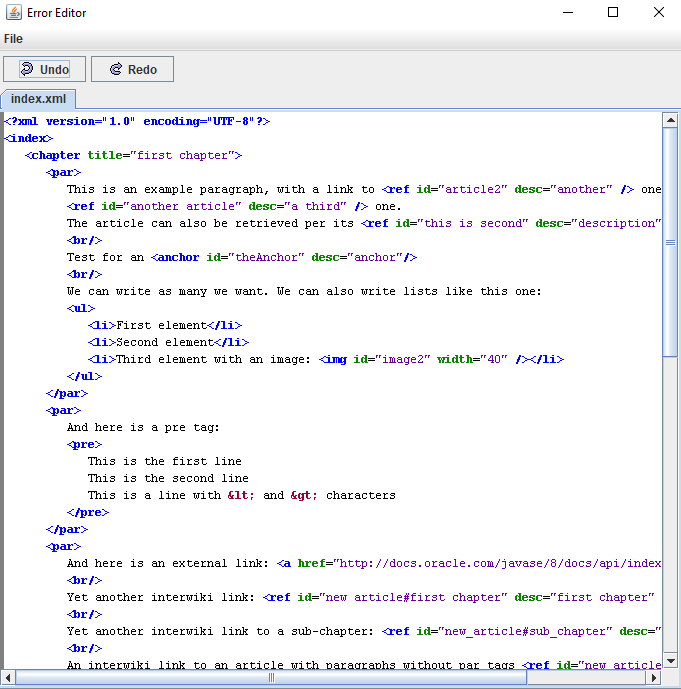
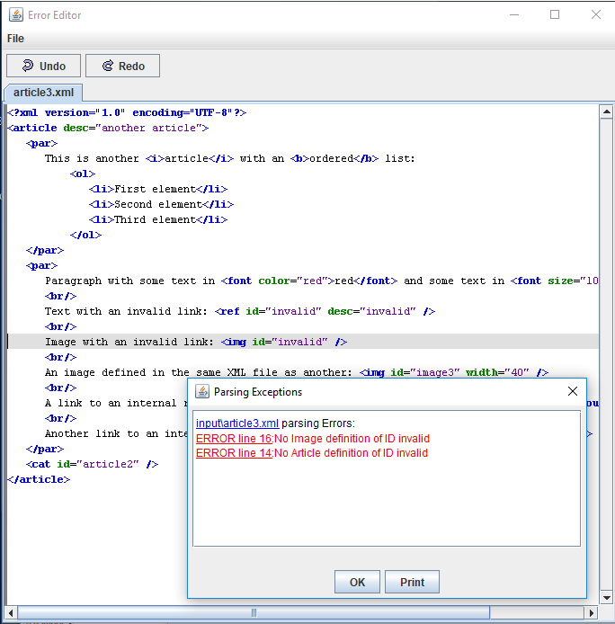
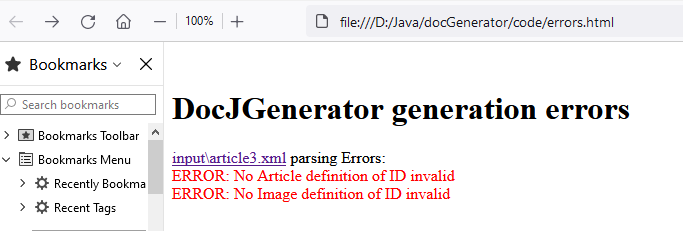

Home
Categories
Dictionary
Download
Project Details
Changes Log
What Links Here
How To
Syntax
FAQ
License
Errors viewer
1 Overview
1.1 File paths
1.2 Viewing the files
1.3 Saving the errors
2 Headless environment usage
3 Configuration options
4 GUI options
5 Errors list
6 See also
1.1 File paths
1.2 Viewing the files
1.3 Saving the errors
2 Headless environment usage
3 Configuration options
4 GUI options
5 Errors list
6 See also
If some errors are encountered during the parsing, a Popup window will appear showing the errors.

For example, if there there is only one input directory with the path
If the
If the value is set to "editor", then a built-in editor will be opened when clicking on the file or on an error which has a line number:
When clicking on an error which has a line number, the cursor will be on this line. For example:
The editor allows to save the file after correcting its content.
The Popup window will not appear if the tool is working in a headless environment. In that case the tool will create a log file if errors are encountered.
The isHeadless command-line option also allows to force the tool to work without opening a Popup window.
The GUI allows to specify how the files with errors will be opened from the error panel.
The errors list article presents the list of errors which can be emitted during the parsing.
Overview
The panel presents the list of errors, ordered by the file in which they were encountered:
File paths
Each file is only shown by default with its path relative to its root directory.For example, if there there is only one input directory with the path
C:/docgenerator/input, and there is an error in the article at C:/docgenerator/input/core/article1.xml, the panel will present the text:input/core/article.xml parsing Errors:.If the
errorsFullPath option is set to true, then the full path of the files will be shown instead.
Viewing the files
TheerrorsViewerType option specifies if and how the files with errors will be opened from the error panel:- "none": the files won't be opened from the error panel
- "browser": (the default value) the source file for each error will be opened in the platform default browser
- "editor": the source file for each error will be opened in a built-in editor
If the value is set to "editor", then a built-in editor will be opened when clicking on the file or on an error which has a line number:

When clicking on an error which has a line number, the cursor will be on this line. For example:

The editor allows to save the file after correcting its content.
Saving the errors
The "Print" button allows to save the list of errors as an html file. For example:
Headless environment usage
Main Article: Usage in a headless environment
The Popup window will not appear if the tool is working in a headless environment. In that case the tool will create a log file if errors are encountered.
The isHeadless command-line option also allows to force the tool to work without opening a Popup window.
Configuration options
TheerrorsViewerType command-line option and configuration option allow to specifies if and how the files with errors will be opened from the error panel:- "none": the files won't be opened from the error panel
- "browser": (the default value) the files will be opened in the platform default browser
- "editor": the files will be opened in a built-in editor
errorsFullPath command-line option and configuration option allow to specifies if the full path of the files where errors are encountered must be presented (by default only the relative path to the root directory is shown)
GUI options
Main Article: GUI Generation options
The GUI allows to specify how the files with errors will be opened from the error panel.
Errors list
Main Article: Errors list
The errors list article presents the list of errors which can be emitted during the parsing.
See also
- Errors: This article explains how errors are handled in the parsing
- Errors list: This article presents the list of errors which can be emitted during the parsing
- GUI Generation options: This article presents the generation options of the GUI
- configuration file: It is possible to define an optional property / value configuration file when starting the application (using the graphical UI or the command line)
- command-line: This article is about how to execute the application by the command-line without showing the UI
×

Categories: General | Gui